第 3 章 · WEEK 11 · CONCURRENCY CONTROL
并发控制：2PL、Timestamp Ordering、死锁
Week 11 整节课：用锁和时间戳让并发事务不出错。Timestamp Ordering 的 13 步填表三年原样出现。
1 这一章在做什么
上一章学会了检查一个 schedule 对不对。但 DBMS 不会事后检查，它需要一套规则，让事务照着做，做出来的 schedule 自然是 conflict serializable 的。规则有两大类：
- Locking（加锁）：用数据之前先上锁，别人要用就得等。代表是 2PL（Two-Phase Locking）。副作用是可能 deadlock。
- Timestamping（时间戳）：不上锁、不等待。给每个事务一个时间戳，发现顺序不对就直接回滚。代表是 TO（Timestamp Ordering）。

2 锁（lock）
锁是附在一个 data item 上的变量，记录这个数据现在允许别人做什么。
Binary lock
只有两个状态：locked（1）和 unlocked（0）。锁上以后，别的事务读和写都不行，只能等。简单，但太严格：几个事务只是想同时读同一个数据，本来互不影响，也被挡住了。
Read/Write lock（也叫 Shared/Exclusive lock）
三个状态：read-locked、write-locked、unlocked。多数 DBMS 用这种。
| X 现在的状态 | 别的事务申请 read-lock(X) | 别的事务申请 write-lock(X) |
|---|---|---|
| unlocked | 给 | 给 |
| read-locked（S 锁，共享） | 给，可以多个事务一起读 | 等 |
| write-locked（X 锁，独占） | 等 | 等 |
记法：S = shared = read lock；X = exclusive = write lock。读之前至少要有 read lock，写之前必须有 write lock，用完要 unlock。
细化讲解
Binary lock 的四条规则（课件第 10 页）
- 读或写 X 之前必须先 lock-item(X)。
- 对 X 的读写全部做完后必须 unlock-item(X)。
- 已经持有 X 的锁，就不再申请。
- 没有持有 X 的锁，就不能 unlock。
DBMS 里有一个 lock manager，维护一张锁表（item-name, LOCK, locking-transaction）和一个等待队列。
Read/Write lock 的六条规则（课件第 16 页）
- 读 X 之前必须有 read-lock(X) 或 write-lock(X)。
- 写 X 之前必须有 write-lock(X)。
- 读写做完后必须 unlock(X)。
- 已经持有 X 的读锁或写锁，不再申请 read-lock(X)。
- 已经持有 X 的读锁或写锁，不再申请 write-lock(X)。有的协议放宽这一条，允许把读锁升级（upgrade）成写锁。
- 没有持有 X 的锁，就不能 unlock(X)。
课件第 8–9、13–15 页是加锁和解锁的伪代码：锁被占着就等，直到 lock manager 把你唤醒；读锁用 no-of-reads 计数，减到 0 才真正解锁。
例题：Tutorial 11 Exercise 3（给事务加上锁）
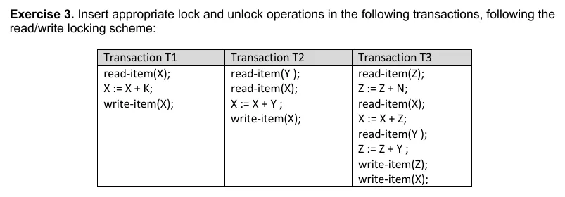
官方答案Tutorial 11 Exercise 3 Solution
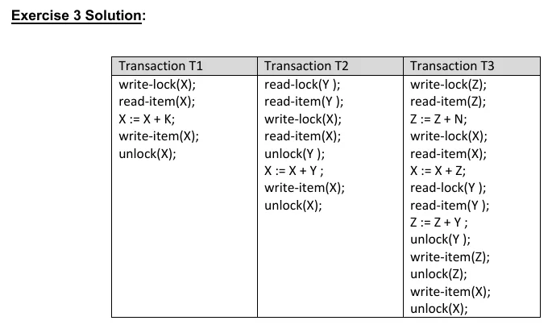
讲解：看每个数据项在这个事务里会不会被写。会被写的（T1 的 X，T2 的 X，T3 的 Z 和 X）直接上 write-lock，因为这门课默认不升级锁；只读的（T2、T3 的 Y）上 read-lock。锁在第一次用这个数据之前加，在最后一次用完之后放。
3 为什么只加锁不够：Two-Phase Locking
光加锁不能保证 serializable。课件第 18–20 页的例子：X = 20，Y = 30。T1 读 Y 后算 X = X + Y；T2 读 X 后算 Y = X + Y。T1 先做完再做 T2 得到一组结果，T2 先再 T1 得到另一组。但如果两个事务都是“读完就马上解锁”，就可能两个都读到旧值，各自写回，结果和两种串行都不一样。原因是锁放得太早。
2PL 的规则只有一句：一个事务里，所有加锁操作都必须在第一个解锁操作之前。
于是事务分成两个阶段：
- Growing（expanding）phase：只加锁，不解锁。
- Shrinking phase：只解锁，不再加锁。
只要每个事务都遵守 2PL，得到的 schedule 就一定是 conflict serializable 的。
检查一个事务是否符合 2PL：找到第一个 unlock，看它后面还有没有 lock。有就不符合。
例题：Tutorial 11 Exercise 4
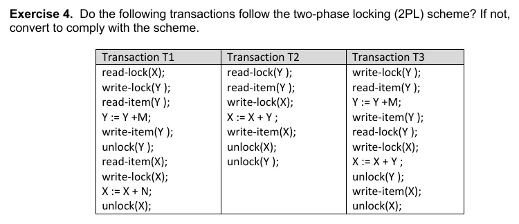
官方答案Tutorial 11 Exercise 4 Solution
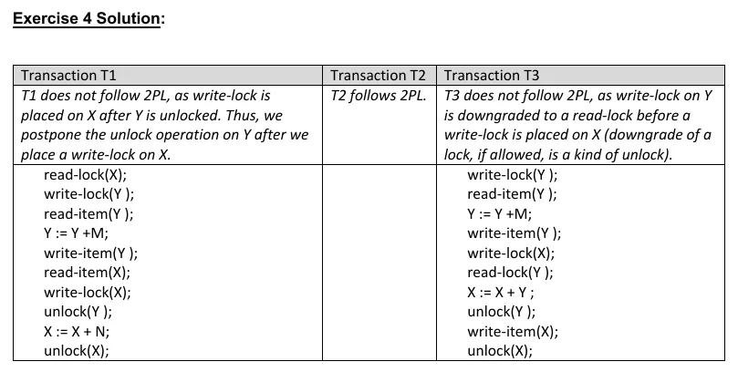
讲解：T1 在 unlock(Y) 之后又 write-lock(X)，违反 2PL；改法是把 unlock(Y) 推迟到 write-lock(X) 之后。T2 的三个加锁都在第一个解锁之前，符合。T3 把 Y 的 write-lock 降级成 read-lock 之后才去申请 write-lock(X)；降级算一种解锁，所以违反；改法是先 write-lock(X)，再降级。
细化讲解
2PL 的局限（课件第 24 页）
- 有些本来 serializable 的 schedule，2PL 不允许出现（它偏保守）。
- 加锁会带来 deadlock 和 livelock（starvation）。
4 Deadlock 和 Starvation
Deadlock（死锁）：两个（或更多）事务互相等对方手里的锁，谁也动不了。只有 abort 掉其中一个或几个事务才能解开。
Livelock / Starvation（饥饿）：系统没有死锁，但某个事务一直排不上，无限期地等下去。解决办法是优先级：等得越久优先级越高，例如 FCFS（先来先服务）队列。
一个满足 2PL 却 deadlock 的例子（课件第 26–27 页）
T1 要先改 prod_qoh 再改 prod_status；T2 要先改 prod_status 再改 prod_qoh。X() 表示申请 exclusive lock。
| 时间 | T1 | T2 | 结果 |
|---|---|---|---|
| t1 | X(prod_qoh) | T1 拿到 qoh 的锁 | |
| t2 | X(prod_status) | T2 拿到 status 的锁 | |
| t3 | W(prod_qoh) | ||
| t4 | X(prod_status) | 被 T2 占着，T1 等 | |
| t5 | X(prod_qoh) | 被 T1 占着，T2 等。Deadlock |
两个事务都只加锁、还没解锁，所以都符合 2PL。结论：2PL 保证 serializable，但不能避免 deadlock。
AI 讲解，非官方2023 Q4-4 / 2024 Q4-3：写一个符合 2PL 但 deadlock 的 schedule
用 X 和 Y 两个数据项写最省事：
No, basic 2PL cannot avoid deadlock. Example:
T1: write-lock(X); write-item(X); write-lock(Y); …
T2: write-lock(Y); write-item(Y); write-lock(X); …
Schedule: T1: write-lock(X); T2: write-lock(Y); T1: w(X); T2: w(Y); T1: write-lock(Y) → T1 waits for T2; T2: write-lock(X) → T2 waits for T1.
Both transactions obey 2PL (no lock is requested after an unlock), but T1 is waiting for the lock on Y held by T2, and T2 is waiting for the lock on X held by T1. Neither can proceed: a deadlock. The wait-for graph has a cycle T1 → T2 → T1.
只有 Conservative 2PL（开始前一次拿到全部的锁）不会 deadlock，见第 6 节。
5 Wait-for Graph：检测 deadlock
- 每个活跃的事务是一个节点。
- Ti 在等 Tj 释放某个数据的锁，就画一条边 Ti → Tj。
- 边是动态的：开始等的时候加上，拿到锁就去掉。
- 图里有环 = deadlock。
课件第 30 页的例子：s1(A); r1(A); x2(B); w2(B); s1(B); s3(C); r3(C); x2(C); x4(B); x3(A);（s = 申请 shared lock，x = 申请 exclusive lock）
| 操作 | 发生了什么 | 加的边 |
|---|---|---|
| s1(A) | T1 拿到 A 的读锁 | |
| x2(B) | T2 拿到 B 的写锁 | |
| s1(B) | B 被 T2 写锁占着，T1 等 | T1 → T2 |
| s3(C) | T3 拿到 C 的读锁 | |
| x2(C) | C 被 T3 读锁占着，T2 等 | T2 → T3 |
| x4(B) | B 被 T2 占着，T4 等 | T4 → T2 |
| x3(A) | A 被 T1 读锁占着，T3 等 | T3 → T1 |
T1 → T2 → T3 → T1 成环，所以 deadlock。T4 只是在等，不在环里。
处理 deadlock 的办法
检测（detection）：画 wait-for graph，发现环就挑一个事务（victim）abort 掉。或者用 timeout：等得超过规定时间就 abort，不管是不是真的 deadlock，这是实际中常用的办法。
预防（prevention）：按事务的时间戳定优先级，越老（时间戳越小）优先级越高。当 Ti 要的锁被 Tj 占着时：
| Ti 是…… | Wait-Die | Wound-Wait |
|---|---|---|
| 比 Tj 老 | Ti 等 | Ti 抢占，Tj 被 abort（wound） |
| 比 Tj 年轻 | Ti 被 abort（die） | Ti 等 |
记法：名字里的两个词，前一个是老事务的做法，后一个是年轻事务的做法。Wait-Die：老的 wait，年轻的 die。Wound-Wait：老的 wound 别人，年轻的 wait。两种办法都不会产生 deadlock。被 abort 的年轻事务重启时保留原来的时间戳，这样它迟早会变成最老的，不会 starvation。
真题：2023 Q7（10 分）
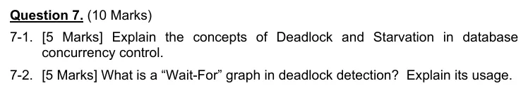
AI 讲解，非官方2023 Q7 两问
7-1
Deadlock occurs when two (or more) transactions are each waiting for locks on items held by the other, so none of them can proceed. For example, T1 holds a lock on X and requests Y, while T2 holds a lock on Y and requests X. A deadlock can only be resolved by aborting one or more of the transactions.
Starvation (livelock) occurs when a transaction is left in a waiting state indefinitely, unable to acquire the locks it needs, although the system is not in deadlock (other transactions keep proceeding). It can be avoided by a priority system such as a first-come-first-served queue, where the longer a transaction waits, the higher its priority.
7-2
A wait-for graph is used to detect deadlocks during the execution of a schedule. Each node is an active transaction. There is an edge Ti → Tj if and only if Ti is waiting for Tj to release a lock on some item. Edges are added when a lock request is queued and removed when the lock is granted. A cycle in the wait-for graph means there is a deadlock. The DBMS checks the graph periodically; when a cycle is found, it selects a victim transaction and aborts it to break the cycle.
每问 5 分，各配一张小图（两个节点互相指的环）更完整。
6 四种 2PL
四种都保证 serializable，区别在于什么时候拿锁、什么时候放锁。
| 名称 | 拿锁 | 放锁 | 特点 |
|---|---|---|---|
| Basic 2PL | 用到时再拿 | 不再需要加锁之后，逐个放 | 可能 deadlock；可能 cascading rollback |
| Conservative 2PL | 开始之前一次拿齐所有要用的锁，拿不齐就一个都不拿、等着 | 逐个放 | 不会 deadlock（四种里唯一的） |
| Strict 2PL | 用到时再拿 | 写锁（X lock）一直持有到 commit 或 abort；读锁可以早放 | 得到 strict schedule，没有 dirty read；可能 deadlock |
| Rigorous 2PL | 用到时再拿 | 所有锁都持有到 commit 或 abort | 最严格，最容易实现；可能 deadlock |
例题：Tutorial 11 Exercise 1
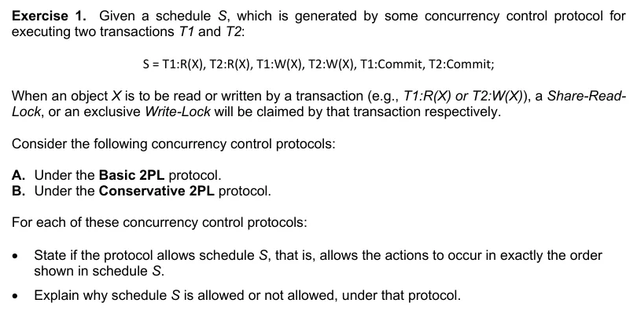
官方答案Tutorial 11 Exercise 1 Solution
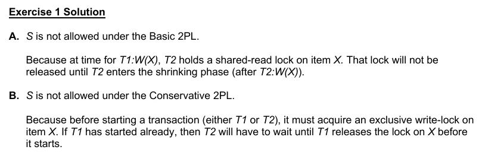
讲解：S 是 r1(X); r2(X); w1(X); w2(X); c1; c2，就是 lost update 的形状。Basic 2PL：T1 和 T2 都拿了 X 的读锁。T1 要写 X 需要写锁，但 T2 的读锁还在，而且 T2 后面还要申请写锁，所以它不能提前放读锁（放了就进入 shrinking phase，不能再加锁）。T1:W(X) 无法在这个位置执行，不允许。Conservative 2PL：事务开始前要拿齐所有锁，T1 一开始就拿了 X 的写锁，T2 根本无法开始，T2:R(X) 不可能出现在 T1:W(X) 之前，不允许。
细化讲解
Tutorial 11 Exercise 2：Strict 2PL 怎样防止问题
题目在上面的截图同一页（Tut11-CC-2026.pdf 第 1 页），这里直接讲官方答案（第 3 页）的思路：
- A.
T1:R(X), T1:R(Y), T2:R(Z), T1:W(X), T2:R(X), T1:W(Y), T2:W(X)：T2:R(X) 读的是 T1 未提交的 X，如果 T1 abort 就是 Dirty Read。Strict 2PL 下 T1 的写锁要到 commit 才放，T2:R(X) 必须等。官方给出的修改后 schedule：T1:R(X), T1:R(Y), T2:R(Z), T1:W(X), T1:W(Y), T2:R(X), T2:W(X)。 - B.
T2:R(Z), T2:R(X), T1:R(X), T1:R(Y), T1:W(X), T2:W(X), T1:W(Y)：两个事务都读了旧的 X，T2 覆盖了 T1 的写，是 Lost Update。Strict 2PL 下 T2 持有 X 的读锁，T1 拿不到写锁。官方给出的修改后 schedule：T2:R(Z), T2:R(X), T2:W(X), T1:R(X), T1:R(Y), T1:W(X), T1:W(Y)。
7 Precedence Graph 和 Wait-for Graph 别混
| Precedence graph | Wait-for graph | |
|---|---|---|
| 用来检查 | schedule 是不是 conflict serializable（对不对） | 有没有 deadlock（能不能进行下去） |
| 边 Ti → Tj 的意思 | Ti 的操作和 Tj 的操作冲突，而且 Ti 的在前 | Ti 正在等 Tj 放锁 |
| 有环说明 | 不是 conflict serializable | deadlock |
| 什么时候画 | 拿到一个完整的 schedule 之后 | 执行过程中，DBMS 定期检查 |
课件还提到：同一对事务，在 precedence graph 里是 Ti → Tj（Ti 先做），在 wait-for graph 里可能正好是反方向 Tj → Ti（Tj 等 Ti 放锁）。
8 Timestamp Ordering（TO）：必考的填表题
TO 不用锁，所以没有等待，也没有 deadlock。做法：
- 每个事务开始时拿到一个时间戳 TS(T)。编号越大越年轻（T78 比 T76 年轻）。
- 每个 data item 记两个时间戳：R（read timestamp，读过它的事务里最年轻的那个）和 W（write timestamp，最后写它的事务）。
- TO 强制让结果等价于“按时间戳从小到大串行执行”。谁的操作违反了这个顺序，谁就被回滚（rollback）并用新的时间戳重启。
T 要读 X：如果 t < W(X)（比 T 年轻的事务已经写过 X）→ 回滚 T。否则允许读，R(X) = max(t, R(X))。
T 要写 X：如果 t < R(X) 或 t < W(X)（比 T 年轻的事务已经读过或写过 X）→ 回滚 T。否则允许写，更新 X 的值，W(X) = t。
直觉：老事务来晚了。老事务本该排在前面，但年轻事务已经先动了这个数据，老事务再读或写就乱了顺序，所以老的那个回滚。这就是课件说的 “the younger transaction takes priority”。
填表时的三个约定：
- 每格写成
值, W时间戳, R时间戳，例如a, W0, R76。 - 计算步骤（如 A := f1(A)）只在事务自己的内存里算，数据库里什么都没变，这一行留空。
- 读的时候 R 取 max：老事务读一个已经被年轻事务读过的数据，R 不变。
课件例题（第 44–45 页）
课件的表是官方答案（课件把时间戳写成 Wa、Rt76 的样子，tutorial 和考试写成 W0、R76，意思一样）。用下面的工具一步步重放，先自己想这一行该填什么，再点“下一步”：
两个回滚点：
- t8：T77 要写 C，但 R(C) = 78，更年轻的 T78 已经读过 C。t77 < 78，T77 回滚，C 不变。T77 会拿到一个新的、比 t78 大的时间戳重启。
- t13：T76 要写 B，但 B 的 W 和 R 都是 78。T76 回滚。T76 在 t4 写过 A，所以 A 要恢复成原来的值和时间戳（课件原话：The original timestamps of A will be recovered）。
例题：Tutorial 11 Exercise 5
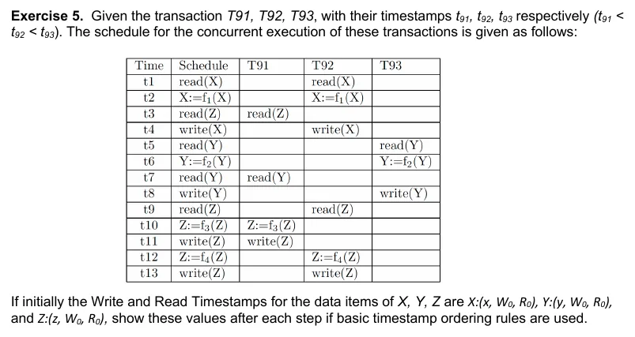
官方答案Tutorial 11 Exercise 5 Solution
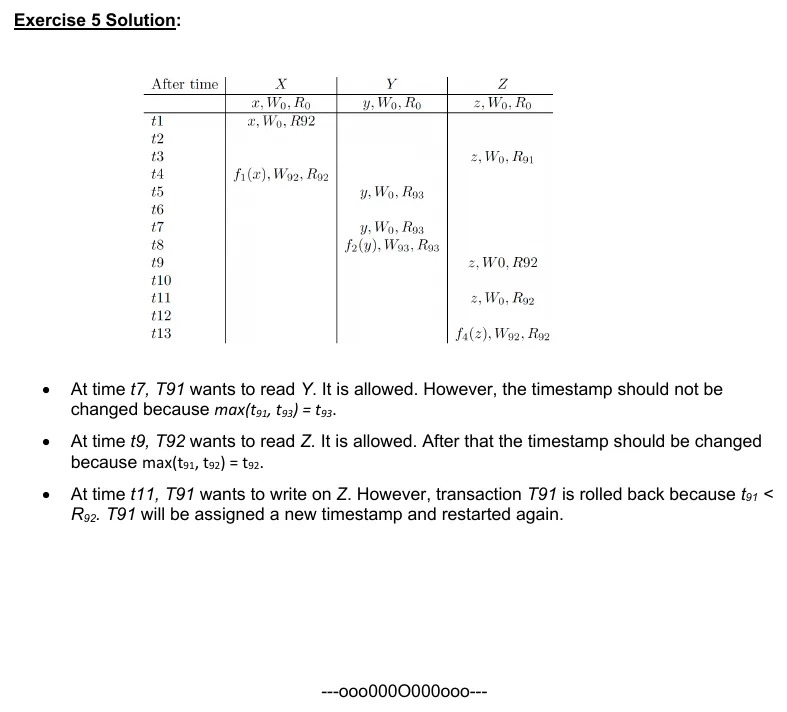
逐步重放（工具的输出已和官方答案的表逐格核对）：
三个要点和官方答案的三条说明对应：t7 老事务 T91 读 Y，允许，R 仍是 93；t9 T92 读 Z，R 从 91 变成 92；t11 T91 要写 Z，但 t91 < R(Z) = 92，回滚。之后 t13 T92 写 Z 成功。
真题：2023 Q6、2024 Q9、2025 Q11（同一个 schedule）
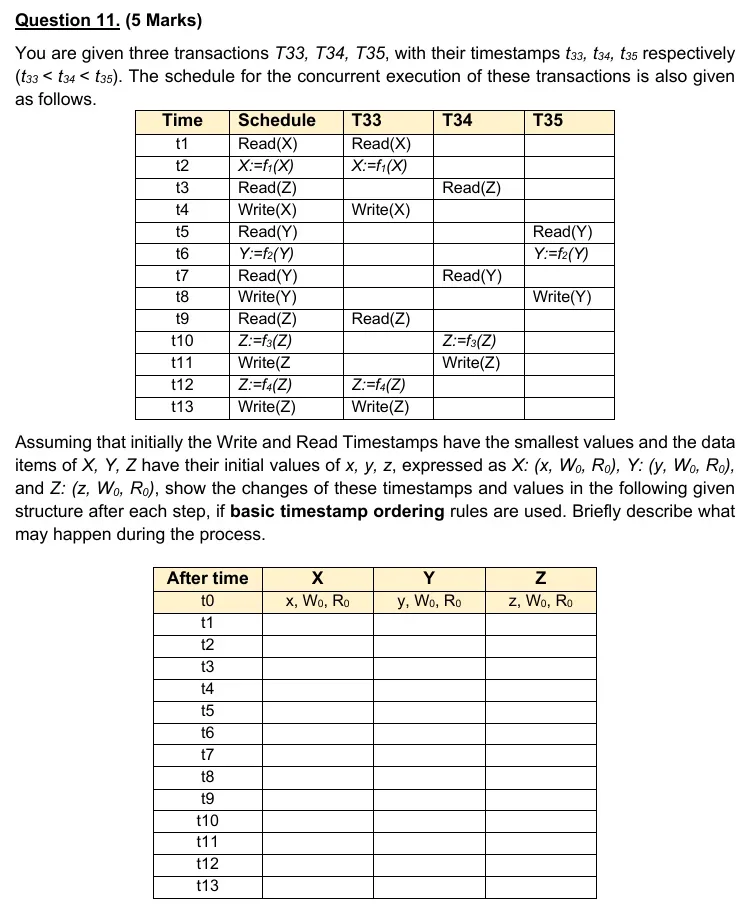
三年的题只换了事务编号和数据项名字：2023 年是 T96、T97、T98 和 A、B、C（10 分）；2024 年是 T77、T78、T79 和 X、Y、Z；2025 年是 T33、T34、T35 和 X、Y、Z。操作的位置完全相同。下面按 2025 年的编号做。
AI 讲解，非官方2025 Q11 的 13 步（程序按课件规则生成）
关键的几步：
- t7：T34 读 Y。W(Y) = 0，允许。R(Y) = max(34, 35) = 35，不变。
- t9：T33 读 Z。允许。R(Z) = max(33, 34) = 34，不变。
- t11：T34 写 Z。34 不小于 R(Z) = 34 和 W(Z) = 0，允许。Z 变成 f3(z), W34, R34。
- t13：T33 写 Z。t33 < R(Z) = 34（也小于 W(Z) = 34），T33 回滚。Z 保持 f3(z), W34, R34。T33 在 t4 写过 X，X 恢复成 x, W0, R0。
“Briefly describe what may happen” 这一句要用文字回答：
At t13, T33 wants to write Z, but t33 < R(Z) = t34 and t33 < W(Z) = t34, i.e., a younger transaction T34 has already read and written Z. Under the basic TO rules T33 is rolled back and will be restarted with a new timestamp. The update T33 made on X at t4 is undone, so X is restored to (x, W0, R0). All other operations are allowed.
没把握的地方t13 那一行 X 是否要写回 x, W0, R0，我是按课件第 45 页例题最后一行的做法（把 A 恢复成 a, Wa, Ra）来的。试卷没有官方答案。
细化讲解
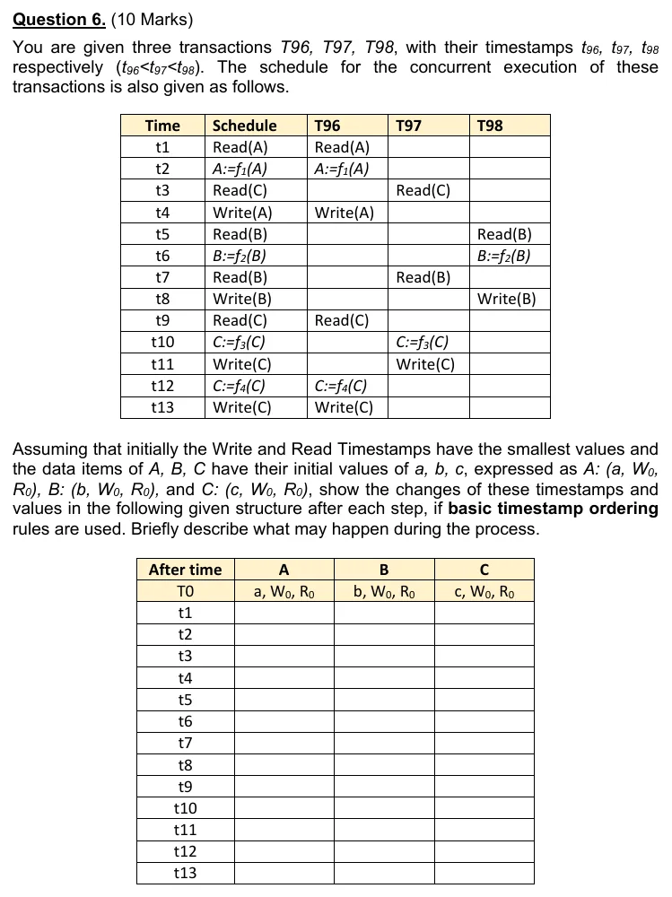
AI 讲解，非官方2023 Q6（T96、T97、T98，A、B、C）
t13：T96 要写 C，t96 < R(C) = W(C) = 97，T96 回滚，A 恢复成 a, W0, R0。
自己试：TO 填表工具
可以改 schedule。每行一步：事务、操作（R、W，或 C 表示本地计算）、数据项。
9 Thomas Write Rule
细化讲解
对 basic TO 的一个放宽。老事务 T 要写 X 时：
- 如果 t < R(X)：年轻事务已经读过，照旧回滚 T。
- 如果 t ≥ R(X) 但 t < W(X)：年轻事务已经写过了，但没有人读过中间的值。这时直接忽略 T 的这次写，T 不回滚，继续执行。
理由：按时间戳顺序，T 的写本来就应该被那个年轻事务的写覆盖，而且中间没人会读到它，所以写不写都一样。
课件第 48 页的例子：T1: R(A)；T2: W(A), Commit；T1: W(A), Commit。它的 precedence graph 有环（r1(A) 在 w2(A) 前，w2(A) 在 w1(A) 前），不是 conflict serializable，basic TO 会回滚 T1。用 Thomas Write Rule，T1 的 W(A) 被忽略，效果等于 T1 然后 T2。所以这条规则会允许一些不是 conflict serializable、但结果正确的 schedule。
Thomas Write Rule 往年没有考过，内容在“细化讲解”里。
10 进阶变式题
答案由本页工具的程序生成。程序先用课件第 45 页的例题和 Tutorial 11 Exercise 5 的官方答案逐格核对过。
变式 1 读的时候被回滚
T11、T12、T13（t11 < t12 < t13），数据项 A、B，初始 A: (a, W0, R0)，B: (b, W0, R0)。
T12 Read(A); T11 Read(A); T12 Write(A); T11 Read(B); T13 Read(B); T11 Write(B); T13 Write(A); T12 Read(B)
程序生成的答案变式 1
t2：T11 读 A，R(A) 保持 12。t6：T11 写 B，但 R(B) = 13，T11 回滚；它之前没写过东西，不用恢复。t7：T13 写 A，W(A) 变成 13，R(A) 仍是 12。t8：T12 读 B，W(B) = 0，允许，R(B) 仍是 13。
变式 2 连续两个事务被回滚
T21、T22、T23（t21 < t22 < t23），数据项 P、Q。
T21 Read(P); T22 Read(Q); T23 Read(P); T22 Write(P); T21 Write(Q); T23 Write(Q); T22 Read(Q); T21 Read(P)
程序生成的答案变式 2
t4：T22 写 P，但 R(P) = 23，回滚。t5：T21 写 Q，但 R(Q) = 22，回滚。t6：T23 写 Q 成功。最后两步属于已经回滚的事务，不再执行（它们会用新时间戳整个重做）。
细化讲解
变式 3 Wait-for graph
x1(A); s2(B); x3(C); s1(B); x2(C); s3(A); x4(A)
s = 申请 shared lock，x = 申请 exclusive lock。画 wait-for graph，判断有没有 deadlock。
AI 讲解，非官方变式 3（手工推导，没有程序验证）
- x1(A)：T1 拿到 A 的写锁。s2(B)：T2 拿到 B 的读锁。x3(C)：T3 拿到 C 的写锁。
- s1(B)：B 上只有 T2 的读锁，读锁可以共享，T1 拿到，不用等。
- x2(C)：C 被 T3 写锁占着，T2 等。边 T2 → T3。
- s3(A)：A 被 T1 写锁占着，T3 等。边 T3 → T1。
- x4(A)：A 被 T1 占着，T4 等。边 T4 → T1。
边只有 T2 → T3、T3 → T1、T4 → T1，T1 没有在等任何人，所以没有环，没有 deadlock。T1 做完放锁后，其余事务依次可以继续。陷阱在 s1(B)：两个读锁不冲突。
11 本章小结
- 光加锁不保证 serializable；2PL（所有加锁在第一个解锁之前）保证。
- 2PL 可能 deadlock 和 livelock。四种 2PL 里只有 Conservative 2PL 不会 deadlock。
- Wait-for graph 有环 = deadlock；解决办法是 abort 环里的一个事务。Livelock 用 FCFS 队列解决。
- Precedence graph 和 wait-for graph 的边方向可能相反。
- TO 保证 serializable 而且没有 deadlock。数据项有 R、W 两个时间戳。编号大的事务年轻，冲突时年轻的优先，老的回滚。
12 小测
键盘：← → 在小节之间翻页。